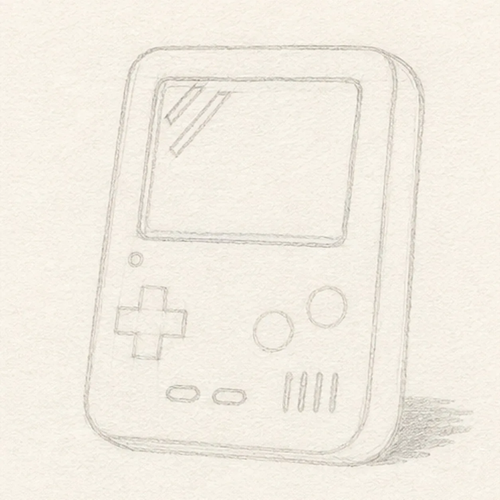
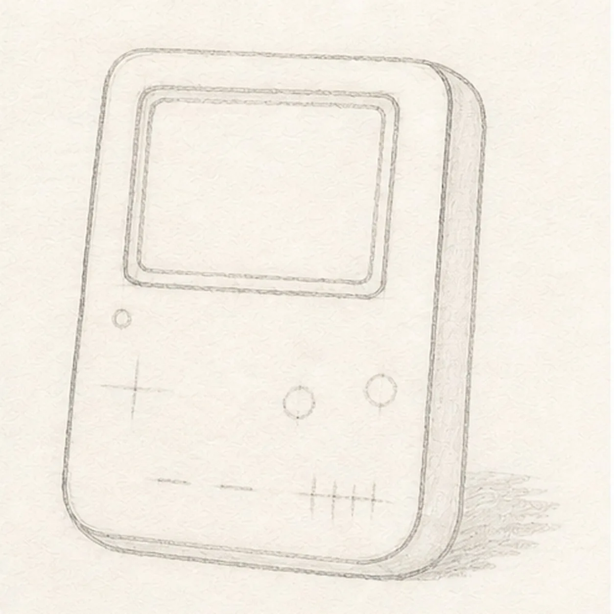
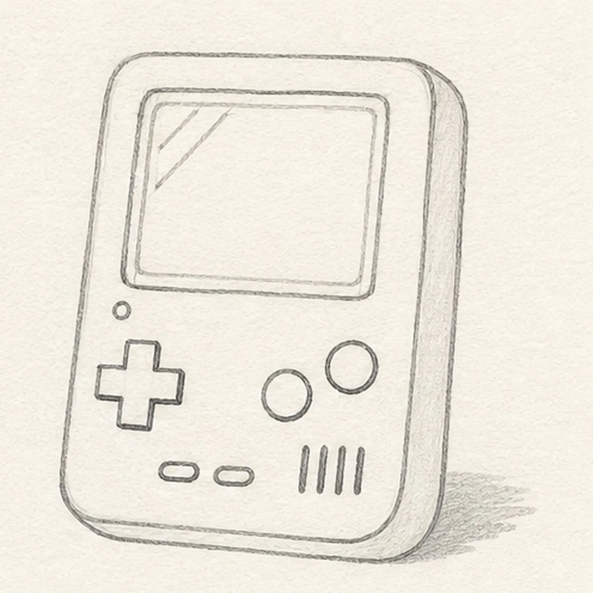
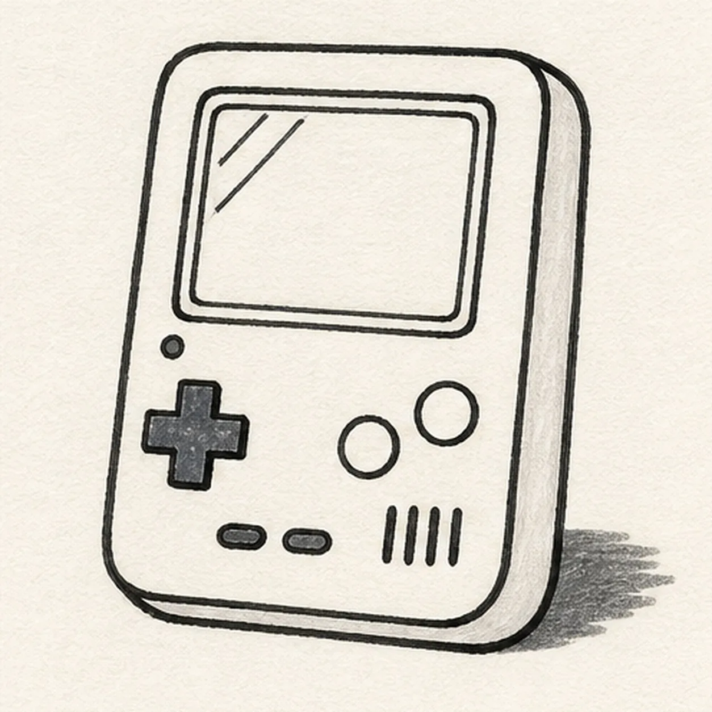
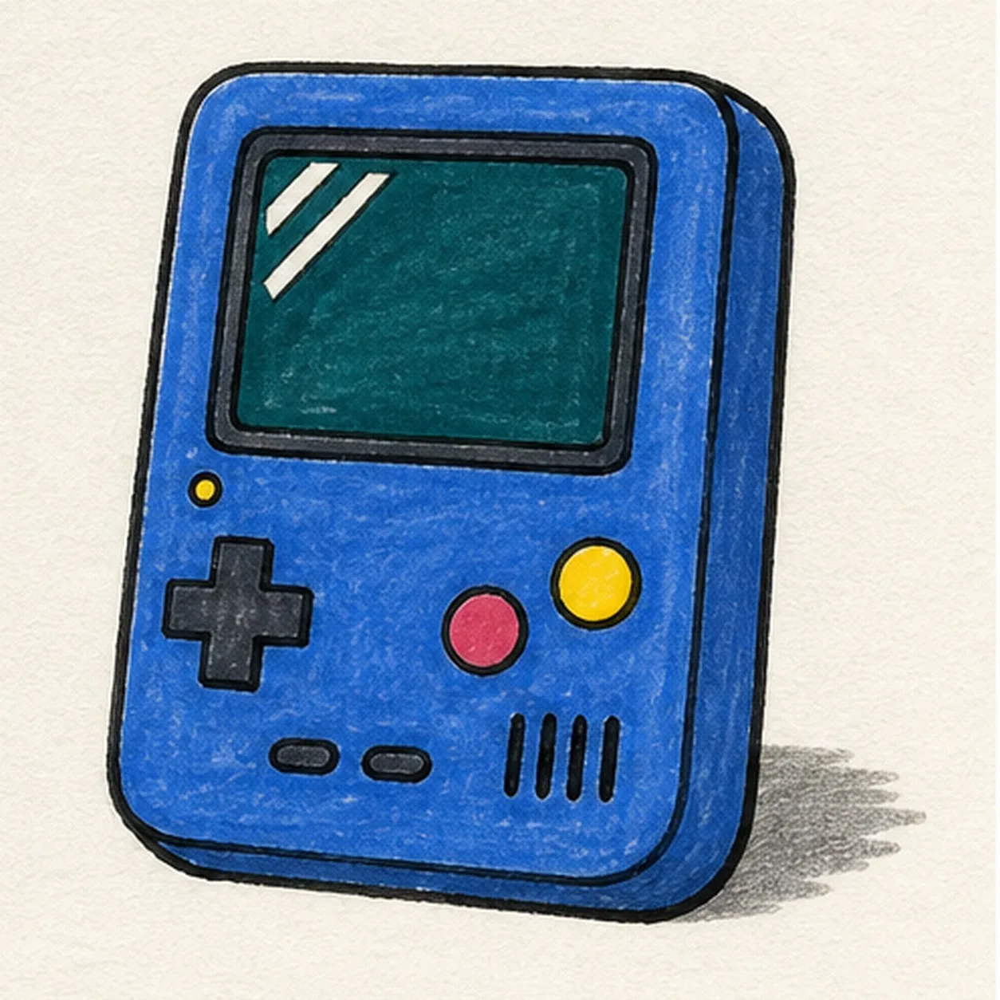

Felt-tip marker mode
Let's draw a retro handheld game console
Treat this as one playful practice round: sketch the idea loosely, simplify the shapes, then commit with confident marker outlines and bright fills.
-
01

Set the console perspective
Draw one pale tilted center axis and a loose rounded front-face envelope, then place the blank-screen footprint, right-side thickness offset, D-pad center, exactly two action-button centers, two menu-button centers, a four-slot speaker baseline, one power-light center, and the broken shadow footprint. Keep this map sparse.
Marker tip: Ghost the console's long diagonals before touching down, then compare the empty margins around the screen. Use tiny centers and ticks for the hardware so this frame plans the layout without prematurely drawing the finished controls.
-
02

Build the shell and screen
Wrap the map with the complete rounded three-quarter shell, visible right-side thickness plane, and raised blank-screen bezel. Keep the D-pad, buttons, speaker, power light, highlights, and shadow as pale placement marks for now.
Marker tip: Pull each long shell edge from the shoulder and rotate the page for the rounded corners. Keep opposite screen edges in the same perspective family, then trace the outer shell and bezel with your finger before adding any hardware.
-
03

Install the controls and hardware
Complete one D-pad, exactly two round action buttons, two small horizontal menu buttons, four short speaker slots, one power light, two diagonal blank-screen highlights, and the broken shadow outline in refined pencil.
Marker tip: Build the D-pad from two crossing rounded bars and compare the action-button gaps. Count two menu buttons and four parallel speaker slots, then confirm every shape is present before reaching for the black marker.
-
04

Ink the hardware rhythm
Trace only the established shell, bezel, controls, speaker slots, power light, screen highlights, and broken shadow with thick handmade black felt-tip.
Marker tip: Ink the small controls before the long outside contour and let each area dry before rotating the page. Give the shell the heaviest line, the screen bezel medium weight, and the tiny controls a lighter touch.
-
05

Fill the retro palette
Add cobalt blue to the shell, raspberry to both action buttons, mustard to the D-pad, deep teal to the blank screen and shadow, and warm gray to the side planes while preserving paper highlights.
Marker tip: Pull blue strokes along each shell plane and fill inward from the outlines to limit bleeding. Keep the two screen highlights uncolored and let a little marker grain show instead of polishing every area flat.
-
06
Power up the final lines
Thicken selected established edges, even the existing marker fills, deepen the broken shadow, clarify the screen highlights, and erase only pale guides that distract.
Marker tip: Count one D-pad, two action buttons, two menu buttons, four speaker slots, and one power light before stopping. Change the palette if you like, but keep the face-free hardware arrangement and blank screen easy to read.